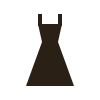
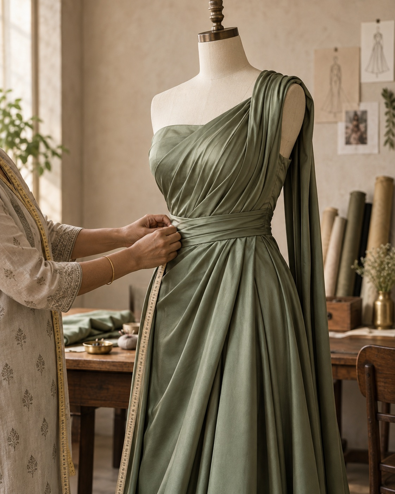
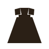
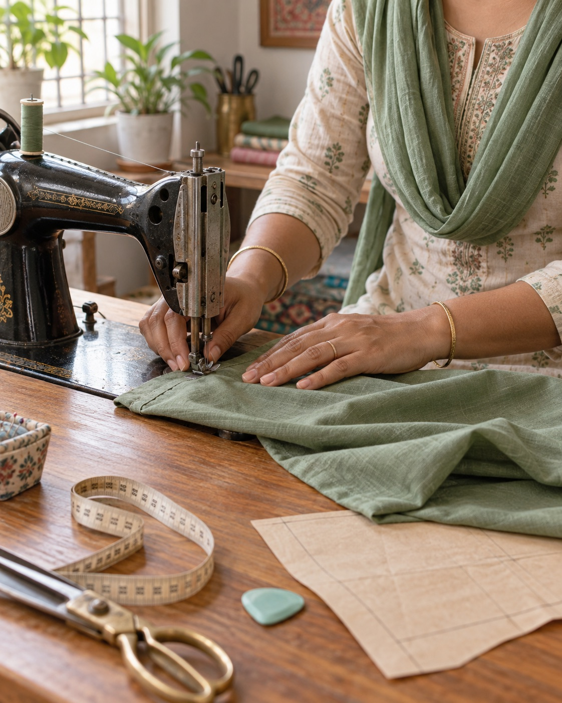
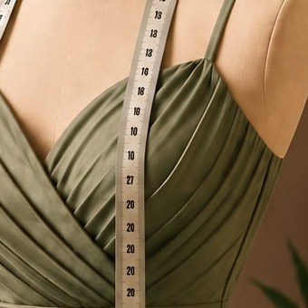
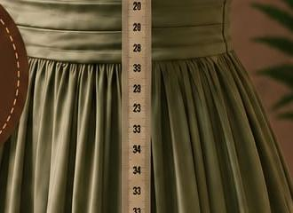

Custom outfits
A complete look developed around your fabric, occasion and preferred silhouette.
Creative Needle Surat · Custom tailoring
Gowns, lehengas, blouses and everyday pieces—cut to your measurements and finished with care by Chetna Patel.
One order at a time. One fit that feels like yours.

The Creative Needle way
A beautiful outfit should not ask you to fit into it. It should be shaped around you.
Creative Needle is a small, owner-led tailoring studio in Mota Varachha, Surat, run by Chetna Patel. Every piece begins with a conversation—how you want it to look, how you want it to move, and where you want to wear it.
Chetna Patel — Designer & teacher
What we stitch
Bring your fabric, your reference, or simply an idea. We will help turn it into a piece made around you.

A complete look developed around your fabric, occasion and preferred silhouette.

Festive and bridal silhouettes balanced for comfort, fall and movement.
Carefully fitted at the shoulder, bust and waist for a clean, confident finish.
Easy everyday shapes and occasion-ready dresses, made in your preferred length.
Tops, skirts and trousers that work together and fit where it matters.
Have something else in mind?
A considered process
Good fit comes from listening first, measuring carefully and refining the small details.
Bring your fabric or inspiration and tell us what you need.
We take your measurements and agree on the details and finish.
Your piece is checked, refined and prepared for collection.

Small batchesLearn with Creative Needle
Hands-on lessons for beginners who want to understand measuring, cutting and stitching with confidence.
In the details
Thoughtful pleats, a waist that sits where it should, and fabric allowed to fall naturally.


Before you visit
Everything you need to know before starting a custom outfit or joining a stitching class.
Creative Needle is at Shop No. 243, Second Floor, Rangila Park, near Yamuna Chowk in Mota Varachha, Surat.
We stitch custom blouses, lehengas, gowns, dresses, kurtis, tops, skirts, trousers, co-ord sets and indo-western outfits to your measurements.
Yes. Chetna Patel teaches beginner-friendly stitching classes in small batches, covering measurements, cutting, machine stitching and garment finishing.
Call or WhatsApp Creative Needle on 7600 091 006 before visiting so we can give you the right appointment time.
Visit Creative Needle
Call or message before visiting so we can give your fitting the time it deserves.
Rangila Park, near Yamuna Chowk,
Mota Varachha, Surat.